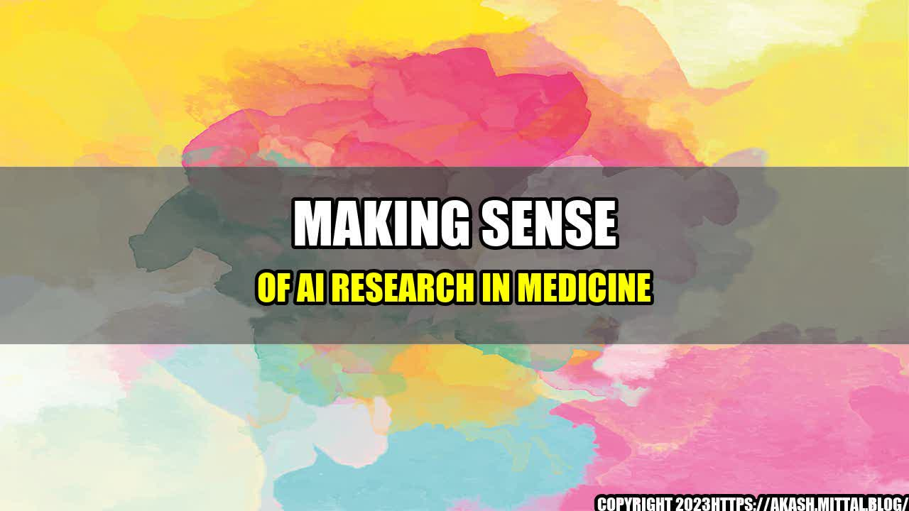

Making Sense of AI Research in Medicine

In late 2018, Sarah was diagnosed with breast cancer. As a busy working mother, she was worried about how her diagnosis would impact her family and her ability to work. Like many patients, she turned to the internet for information, hoping to find answers and guidance on how to navigate this challenging time.
But the sheer volume of information was overwhelming and often conflicting, making it difficult for her to make informed decisions about her treatment options. That's when her oncologist suggested that she consider using an AI-powered decision support tool that could help her weigh the risks and benefits of each option more easily.
At first, Sarah was hesitant. She wondered if an AI system could really understand her unique situation and provide helpful advice. But after doing some research and talking with other patients who had used the tool, she decided to give it a try. And she was glad she did.
The AI tool helped Sarah make sense of the complex information she was receiving, allowing her to make more informed decisions about her treatment options. It gave her a sense of control and offered peace of mind during a difficult time.
What is AI research in medicine?
AI research in medicine involves the use of advanced algorithms and machine learning technologies to analyze complex medical data and assist healthcare professionals in making more accurate diagnoses, developing more effective treatments, and improving patient outcomes.
From image recognition software that can identify cancerous cells to predictive models that can help identify patients at risk of developing chronic diseases, AI has the potential to revolutionize the way we approach healthcare.
Why is AI research in medicine important?
There are several reasons why AI research in medicine is so important:
- Improved diagnoses: By analyzing large amounts of medical data, AI algorithms can identify patterns and make connections that human doctors may miss, leading to more accurate diagnoses.
- Better treatment outcomes: AI can help healthcare professionals develop more personalized treatment plans that take into account a patient's unique health history and genetic makeup, leading to more effective treatments and better outcomes.
- Reduced healthcare costs: By identifying patients at risk of developing chronic diseases and intervening early, AI can help reduce the overall cost of healthcare by reducing the need for expensive treatments and hospitalizations.
Examples of AI research in medicine
There are many examples of how AI is being used in medical research and practice:
- Cancer diagnosis: AI algorithms can analyze medical images to look for patterns and identify areas of concern, helping doctors make more accurate and timely diagnoses.
- Predictive modeling: AI can analyze large amounts of medical data to identify patients at risk of developing chronic diseases like diabetes and heart disease, allowing healthcare providers to intervene early and prevent disease progression.
- Drug development: AI can help researchers identify new drug targets and predict how drugs will interact with the body, leading to more effective and targeted therapies.
- Personalized medicine: AI can help healthcare professionals develop personalized treatment plans that take into account a patient's unique health history and genetic makeup, leading to more effective treatments and better outcomes.
Best practices for AI research in medicine
As with any emerging technology, there are best practices that should be followed when conducting AI research in medicine:
- Ensure data quality: AI algorithms rely on large amounts of high-quality data to make accurate predictions and recommendations. It's important to ensure that the data being used is reliable and accurate to ensure the best possible outcomes.
- Collaborate with healthcare professionals: AI should never replace human doctors or healthcare professionals. Rather, it's important to collaborate with them to ensure that AI tools are being used effectively and appropriately.
- Protect patient privacy: Medical data is highly sensitive and must be protected. It's important to ensure that patient privacy is maintained and that appropriate security measures are in place to prevent data breaches.
Conclusion
AI research in medicine has the potential to revolutionize healthcare, making diagnoses more accurate, treatments more effective, and outcomes better for patients. By following best practices and collaborating with healthcare professionals, researchers can ensure that AI tools are being used effectively and safely to improve patient outcomes.
- Improved diagnoses
- Better treatment outcomes
- Reduced healthcare costs
Curated by Team Akash.Mittal.Blog
Share on Twitter Share on LinkedIn